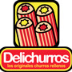

Estás en: 
Ir a:


Franquicias en Perú. Las mejores inversiones.
Franquicias de Alimentación
Amar Hidroponia
+ info ContactarBonjour Crepe
+ info|
Bonjour Crepe elabora crepes artesanales dulces y saladas sin preservantes, con masa con ingredientes de primeras calidad y café orgánico de exportación.Ofrece servicios de catering y evento. |
Cinnabon
+ info ContactarDel Cultivo
+ info|
Del Cultivo está desarrollando agricultura ecológica en las tiendas y un consumo responsable. Sus tiendas ofrecen productos orgánicos con el cumplimiento de requisitos, promoviendo el comercio local. |
Delichurros
+ info|  |
Delichurros se dedica a la elaboración de deliciosos churros rellenos y productos de cafetería. Churros crujientes rellenos de crema batida y helado, leche condensada, cajeta, mermelada o chocolate. Completa su carta con crepas, waffles y hotdogs. |
Disfruta
+ info|
Disfruta son espacios donde se sirven jugos y zumos de frutas frescas y naturales, ofreciendo siempre un producto de calidad cargado de salud y vitaminas. |
Empanadas Paulistas
+ info|
|
Empanadas Paulistas es una empresa totalmente peruana, nacida con el proposito de crear las más deliciosas empanadas tradicionales de tipo rodizio brasileño. Su gran atractivo viene dada por su variedad de sabores, tanto peruanos como internacionales. |
Loops & Coffee
+ info|
Loops&Coffee es una empresa divertida, exitosa y dinámica que ofrece Donas, Milkshakes, Smoothies y el mejor café. |
Mais Pipoca
+ info|
|
Mais Pipoca es una empresa dedicada a la gestión de máquinas dispensadoras de palomitas de maíz de preparación instantánea. |
Mis Costillitas
+ info|
Mis Costillitas es un asador especializado en parrilladas y carnes a la brasa, el plato especial de la franquicia son las jugosas y tiernas costillas de cerdo, presentadas en cortes largos o cortos. |
QChurros
+ info|
Q’Churros es un restaurante especializado en la venta de los tradicionales churros, la franquicia además de los clásicos glaseados, ofrece unas innovadoras recetas y presentaciones originales. |
Yoim Ginseng Coffee
+ info ContactarDirectorio
- Agencias de Viajes
- Alimentación
- Animales / Plantas
- Asesorías
- Belleza / Estética
- Clínicas / Salud
- Comercios Varios
- Construcción / Reformas
- Deportes / Gimnasios
- Educación / Idiomas
- Impresión / Copisterías
- Informática / Internet
- Inmobiliarias
- Limpieza / Lavanderías
- Moda
- Ocio / Actividades
- Productos especializados
- Regalo / Juguetes
- Restaurantes / Café / Bares
- Servicios especializados
- Telefonía
- Transporte
- Vehículos
C/ Coso 67-75, 4ºF, 50001 - Zaragoza (España)
Tfno. 0034 + 976 228 839